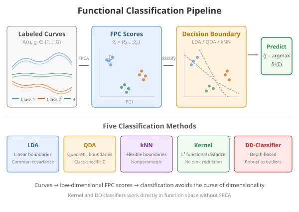

Supervised Classification of Functional Data
Source:vignettes/articles/functional-classification.Rmd
functional-classification.RmdIntroduction
Supervised classification assigns functional observations to discrete groups. fdars provides seven methods:
| Method | Description | Strengths |
|---|---|---|
| LDA | Linear discriminant analysis on FPC scores | Fast, interpretable |
| QDA | Quadratic discriminant analysis on FPC scores | Handles class-specific covariance |
| kNN | k-nearest neighbors in FPC space | Nonparametric, flexible |
| Kernel | Kernel classifier with functional bandwidth | Fully nonparametric |
| DD | Depth-vs-depth classification | Robust to outliers |
| Logistic | FPC-based logistic regression | Calibrated probabilities |
| Elastic logistic | Phase-invariant logistic | Handles misalignment |
The first five methods are available through the unified
fclassif() interface and support optional scalar
covariates. Logistic regression uses functional.logistic(),
and elastic logistic uses elastic.logistic().

Why Functional Classification?
The fundamental problem is: given a curve , predict a class label . One might be tempted to discretize each curve at grid points and apply a standard multivariate classifier. However, this approach faces two obstacles:
Curse of dimensionality. With grid points (often 100–1000), multivariate classifiers struggle unless . Covariance matrices become singular, nearest-neighbor distances concentrate, and decision boundaries overfit.
Ignoring smoothness. Discretization treats and as unrelated features, discarding the continuity and smoothness of the underlying curves.
Functional classification resolves this by first projecting curves onto a low-dimensional basis — typically the leading FPC directions — and then classifying in that reduced space. This simultaneously regularizes the problem (since ) and respects the functional structure (since FPCs capture the dominant modes of variation).
For methods that work directly in function space (kernel classifier, DD classifier), distances are computed using proper functional metrics ( norm or depth), avoiding discretization artifacts entirely.
Mathematical Framework
All FPC-based methods (LDA, QDA, kNN) start by computing the scores where and are the eigenfunctions of the pooled covariance operator. Classification then operates in .
Linear Discriminant Analysis (LDA)
LDA assumes that the FPC scores within each class are Gaussian with a common covariance:
The pooled covariance is:
Classification uses the log-posterior discriminant:
where is the prior probability of class (estimated by class proportions). The observation is assigned to . Because is shared, the decision boundaries are linear (hyperplanes) in the FPC score space.
Quadratic Discriminant Analysis (QDA)
QDA relaxes the equal-covariance assumption by estimating a class-specific covariance for each group. The discriminant becomes:
The additional term penalizes classes with large spread. Decision boundaries are now quadratic (ellipsoidal). QDA is more flexible than LDA but requires enough observations per class to reliably estimate — roughly as a rule of thumb.
k-Nearest Neighbors (kNN)
kNN classifies by majority vote among the closest training curves in FPC space, using Euclidean distance:
The predicted class is whichever label appears most often among the neighbors. kNN makes no distributional assumptions, making it robust to non-Gaussian score distributions and nonlinear class boundaries. The choice of is typically made via cross-validation: small gives flexible but noisy boundaries; large gives smoother but potentially biased boundaries.
Kernel Classifier
The kernel classifier works directly in function space without dimension reduction. It uses the functional distance with Simpson’s rule integration weights:
Classification uses a Gaussian kernel to weight contributions from training curves:
The predicted class is:
That is, for each class, the kernel weights of all training curves in
that class are summed, and the class with the largest total weight wins.
The bandwidth
controls the locality of the classifier. fclassif() selects
via leave-one-out cross-validation over a grid of distance
percentiles.
DD-Classifier (Depth-vs-Depth)
The depth-based classifier avoids both dimension reduction and distance computation. Instead, it computes the statistical depth of each curve with respect to each class distribution:
using the Fraiman–Muniz integrated depth:
where is the univariate depth (one minus twice the distance from the median CDF value) and is the marginal distribution at time .
For classes, each curve is mapped to a point and classification proceeds in this “depth-depth” space. The simplest rule assigns to : the class in which the curve is most “central”. This approach is robust to outliers because depth is a rank-based measure.
Iris as Functional Data
Instead of a toy simulation we use the classic iris dataset, transformed into functional data via the Andrews transformation. This maps each 4-dimensional observation to a curve on using a Fourier expansion — preserving Euclidean distances up to a constant factor.
The three species (setosa, versicolor, virginica) are the classes. Crucially, versicolor and virginica overlap substantially, making this a non-trivial classification task.
andrews_transform <- function(X, m = 200) {
if (is.data.frame(X)) X <- as.matrix(X)
n <- nrow(X)
p <- ncol(X)
t_grid <- seq(-pi, pi, length.out = m)
basis <- matrix(0, m, p)
basis[, 1] <- 1 / sqrt(2)
for (j in 2:p) {
k <- ceiling((j - 1) / 2)
if (j %% 2 == 0) {
basis[, j] <- sin(k * t_grid)
} else {
basis[, j] <- cos(k * t_grid)
}
}
fdata(X %*% t(basis), argvals = t_grid)
}
X_raw <- as.matrix(iris[, 1:4])
X <- scale(X_raw)
species <- iris$Species
y <- as.integer(species) # 1 = setosa, 2 = versicolor, 3 = virginica
fd <- andrews_transform(X)
plot(fd, color = species, alpha = 0.35, show.mean = TRUE,
palette = c("setosa" = "#E69F00", "versicolor" = "#56B4E9",
"virginica" = "#009E73")) +
labs(x = expression(t), y = expression(f[x](t)),
title = "Iris Andrews Curves by Species")
Setosa is well separated, but versicolor and virginica overlap — exactly the kind of challenge where classifier choice matters.
Comparing All Five Methods
methods <- c("lda", "qda", "knn", "kernel", "dd")
results <- list()
for (meth in methods) {
if (meth == "knn") {
results[[meth]] <- fclassif(fd, y, method = meth, ncomp = 3, k = 7)
} else {
results[[meth]] <- fclassif(fd, y, method = meth, ncomp = 3)
}
}
acc_df <- data.frame(
Method = toupper(methods),
Training_Accuracy = sapply(results, function(r) round(r$accuracy, 3))
)
print(acc_df)
#> Method Training_Accuracy
#> lda LDA 0.980
#> qda QDA 0.973
#> knn KNN 0.960
#> kernel KERNEL 0.960
#> dd DD 0.840Training accuracy alone can be misleading — QDA and kNN may overfit. Cross-validation gives a fairer picture (see below).
Confusion Matrix
The LDA confusion matrix reveals where errors concentrate:
plot(results[["lda"]])
Most errors are between versicolor and virginica, as expected from the overlapping Andrews curves. Setosa is perfectly classified because its curves are well separated in the FPC score space.
Cross-Validation
fclassif.cv() evaluates out-of-sample error via k-fold
cross-validation. This gives the most honest estimate of how each
classifier would perform on new data, guarding against the optimism of
training accuracy.
set.seed(42)
cv_results <- list()
for (meth in methods) {
cv_results[[meth]] <- fclassif.cv(fd, y, method = meth,
ncomp = 3, nfold = 10, seed = 42)
}
cv_df <- data.frame(
Method = toupper(methods),
CV_Error = sapply(cv_results, function(r) round(r$error.rate, 3)),
CV_Accuracy = sapply(cv_results, function(r) round(1 - r$error.rate, 3))
)
print(cv_df)
#> Method CV_Error CV_Accuracy
#> lda LDA 0.027 0.973
#> qda QDA 0.033 0.967
#> knn KNN 0.040 0.960
#> kernel KERNEL 0.667 0.333
#> dd DD 0.667 0.333The CV error rates account for overfitting. Methods that had perfect training accuracy (like QDA) may show higher CV error than simpler methods (like LDA), especially when sample sizes per class are small relative to the number of parameters.
Choosing the Number of Components
Cross-validation can also help select the optimal number of FPC components. Too few loses discriminative information; too many introduces noise.
ncomp_range <- 1:6
cv_by_ncomp <- sapply(ncomp_range, function(k) {
fclassif.cv(fd, y, method = "lda", ncomp = k, nfold = 10, seed = 42)$error.rate
})
df_ncomp <- data.frame(ncomp = ncomp_range, error = cv_by_ncomp)
ggplot(df_ncomp, aes(x = ncomp, y = error)) +
geom_line() +
geom_point(size = 2) +
labs(x = "Number of FPC Components", y = "10-Fold CV Error Rate",
title = "LDA on Iris: Component Selection") +
scale_x_continuous(breaks = ncomp_range)
The optimal number of components balances two effects: adding early components captures the dominant modes of between-class variation, improving discrimination. Adding later components brings in directions that are mainly within-class noise, diluting the signal.
Functional Logistic Regression
For binary classification, functional.logistic() fits a
logistic regression model using FPC scores as features. Unlike the
discriminative methods above, this produces calibrated
probabilities — useful when you need confidence in the
classification, not just a label.
The IRLS Algorithm
The functional logistic model uses the logit link on FPC scores:
This is estimated via Iteratively Reweighted Least Squares (IRLS), which alternates between:
- Working response:
- Working weights:
- Weighted least squares: update by regressing on with weights
Convergence is monitored via the log-likelihood:
Binary Classification Example
# Create binary response from iris species (setosa vs rest)
y_bin <- as.numeric(y == 1) # 1 = setosa, 0 = versicolor/virginica
logit_fit <- functional.logistic(fd, y_bin, ncomp = 3)
print(logit_fit)
#> Functional Logistic Regression
#> ==============================
#> Number of observations: 150
#> Number of FPC components: 3
#> Accuracy: 1
#> Log-likelihood: 0
#> Iterations: 100
cat("Probabilities range:", range(logit_fit$probabilities), "\n")
#> Probabilities range: 2.385465e-45 1Estimated probabilities near 0 or 1 indicate confident classification; values near 0.5 indicate curves in the overlap region where the predictor’s FPC scores do not clearly separate the two classes.
Probability Interpretation
Unlike discriminant methods (LDA/QDA), functional logistic regression directly models . This makes it natural for:
- Risk scoring: rank observations by predicted probability
- Threshold tuning: adjust the decision boundary beyond 0.5
- Calibration: the predicted probabilities approximate true class frequencies
Elastic Logistic Regression
When curves exhibit phase variability (timing
differences), standard logistic regression on FPC scores may confound
amplitude and phase effects. elastic.logistic() jointly
estimates alignment warping functions and logistic regression
coefficients in the SRSF domain.
See vignette("articles/elastic-regression") for the full
elastic regression framework, including elastic.logistic()
and elastic.pcr().
Choosing a Classifier
The table below summarizes practical considerations:
| Criterion | LDA | QDA | kNN | Kernel | DD | Logistic |
|---|---|---|---|---|---|---|
| Assumptions | Common cov. | Class-specific cov. | None | None | None | Linear in FPC space |
| Min. | ||||||
| Boundaries | Linear | Quadratic | Flexible | Flexible | Depth-based | Linear |
| Tuning | only | only | , | |||
| Speed | Fast | Fast | Moderate | Slow | Moderate | Fast |
| Robustness | Low | Low | Moderate | Moderate | High | Low |
| Probabilities | Posterior | Posterior | No | No | No | Calibrated |
Rules of thumb:
- Start with LDA as a baseline — it is fast, interpretable, and often competitive.
- Try QDA when you suspect classes have different shapes in FPC space (different covariance patterns).
- Use kNN when decision boundaries may be nonlinear and you have enough data per class.
- Use the kernel classifier for small-to-moderate datasets where you want to avoid the FPC projection step entirely.
- Use DD when robustness to outliers is paramount or distributional assumptions are suspect.
- Use logistic regression when you need calibrated probabilities or want to interpret coefficients as log-odds.
References
- Delaigle, A. and Hall, P. (2012). Achieving near perfect classification for functional data. Journal of the Royal Statistical Society: Series B, 74(2), 267–286.
- Cuevas, A., Febrero, M., and Fraiman, R. (2007). Robust estimation and classification for functional data via projection pursuit. Computational Statistics, 22(3), 481–496.
- Li, J. and Yu, T. (2008). DD-classifier: nonparametric classification procedure based on DD-plot. Journal of the American Statistical Association, 103(483), 737–747.
- Lopez-Pintado, S. and Romo, J. (2009). On the concept of depth for functional data. Journal of the American Statistical Association, 104(486), 718–734.
See Also
-
vignette("articles/andrews-transformation")for more on the Andrews transform and its distance-preservation property -
vignette("articles/scalar-on-function")for scalar-on-function regression -
vignette("articles/elastic-regression")for elastic logistic and elastic PCR -
vignette("articles/clustering")for unsupervised functional clustering -
vignette("articles/fpca")for functional PCA, which underlies LDA/QDA/kNN